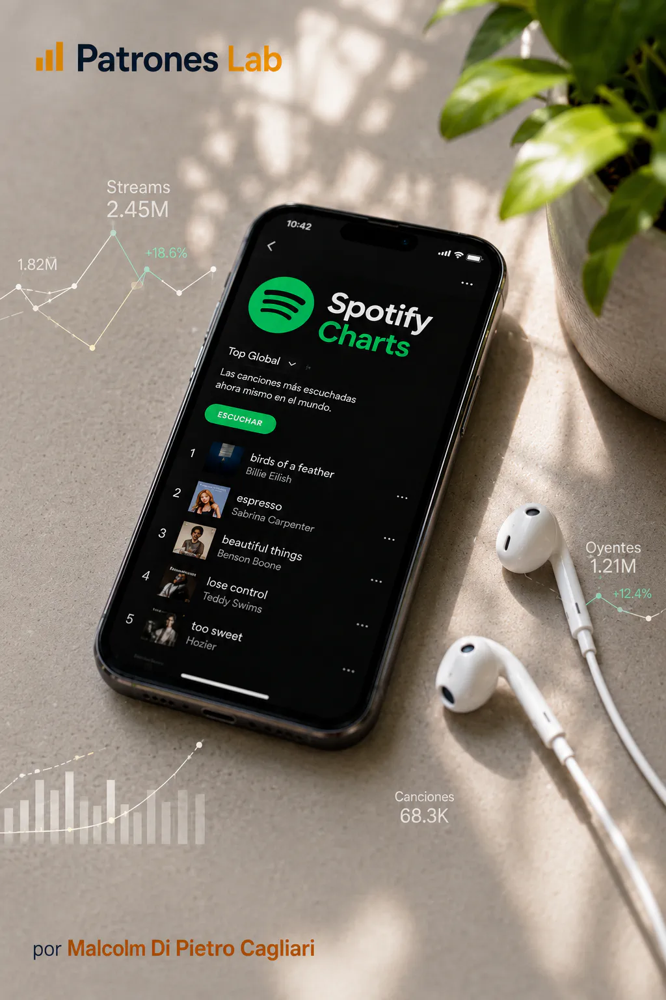

БИЗНЕС-ИНТЕЛЛЕКТ · ПРОЕКТ 14

Панель мониторинга проекта 13 Power BI
Панель управления в Power BI · Spotify Charts
Анализ музыкальных рейтингов Spotify Charts на основе открытых данных о песнях, исполнителях, альбомах и рынках. Интерактивная панель Power BI помогает изучать число прослушиваний, присутствие в чартах, лидерство с течением времени и географическое распределение.
КОНТЕКСТ И ЦЕЛЬ
Создайте аналитическую панель в Power BI на основе общедоступных данных из Spotify Charts, объединяющую песни, исполнителей, альбомы, даты и рынки, чтобы понять, как музыкальное присутствие распределяется в разных чартах.
Проект стремится проанализировать, какие песни концентрируют наибольший объем прослушиваний, какие исполнители сохраняют присутствие в рейтингах, как меняется лидерство с течением времени и какие рынки объясняют наибольшую активность в наборе данных.
МОДЕЛЬ И РАЗРАБОТКА
- Использование общедоступных данных Spotify Charts в качестве основного источника для анализа ежедневных рейтингов песен, ежедневных рейтингов исполнителей и еженедельных рейтингов альбомов.
- Подготовка модели данных с таблицами фактов, измерений и отношений, ориентированных на анализ в Power BI, с разделением песен, исполнителей, альбомов, стран, дат и визуальной вспомогательной информации.
- Построение индикаторов для измерения общего количества прослушиваний, появления в чартах, лучших позиций, попадания в топ-10, присутствия на рынке, концентрации ведущих песен и временной эволюции рейтингов.
- Исследование моделей потребления музыки с помощью интерактивной визуализации, фильтров по периоду, стране, рыночной группе, исполнителю и песне.
ТЕКУЩЕЕ СТАТУС И СЛЕДУЮЩИЕ ШАГИ
Текущая разработка объединяет подготовку данных, реляционное моделирование и визуализацию в Power BI для создания четкого считывания музыкальных рейтингов Spotify.
Ожидаемый результат — интерактивная информационная панель, ориентированная на портфолио, с темной эстетикой, исполнительным чтением и графикой, ориентированной на обнаружение концентрации, лидерства, территориального присутствия и эволюции диаграмм.